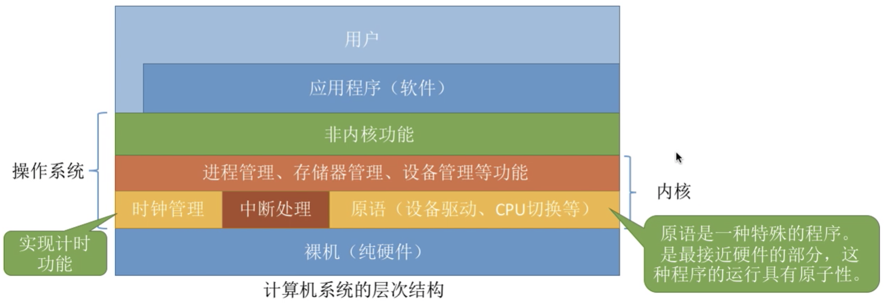
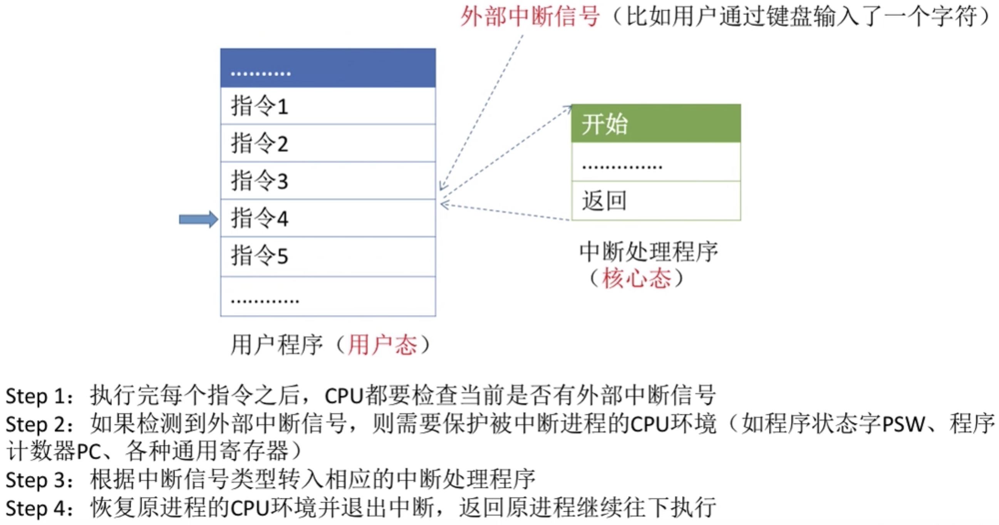
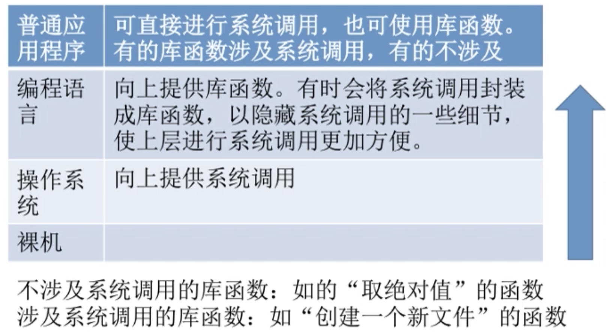
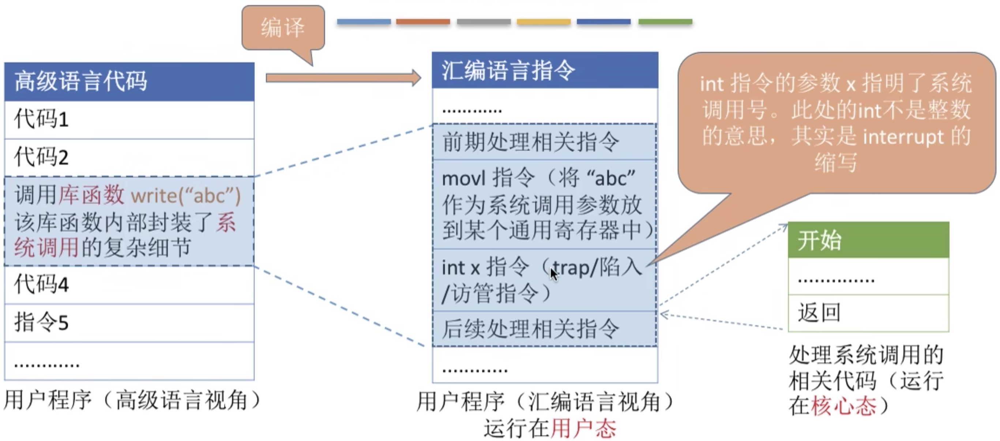

1 操作系统的概念、功能和目标
操作系统（Operating System, OS）控制和管理整个计算机系统的硬件和软件资源，并合理组织调度计算机的工作和资源分配，以提供给用户和其他软件方便的接口和环境，它是计算机系统中最基本的系统软件。
操作系统提供的功能主要有：
作为系统资源管理者：文件管理，存储器管理，处理器管理，设备管理。
作为用户和计算机硬件之间的接口：提供
- 允许用户直接访问的命令接口：联机命令接口（交互式命令接口，比如CMD。用户说一句，系统做一句），脱机命令接口（批处理命令接口，比如BAT。用户说一堆，系统做一堆）。
- 允许用户通过程序间接使用的程序接口：由一组系统调用组成（比如DLL）。
- 以及现在最常用的图像化用户接口GUI。
- 实现对硬件机器的拓展：没有任何软件支持的计算机称为裸机，裸机上安装操作系统，可以提供资源管理功能和方便用户的服务功能。
2 操作系统的特征
- 并发（Concurrency）：两个或多个事件在同一时间段内发生。宏观上同时发生，微观上交替发生。
注意和并行（Parallelism）的区别：并行是在同一时间发生！
操作系统的并发指系统中同时存在多个运行着的程序。对于单核CPU，同一时刻只能执行一个程序，操作系统就负责这些多个程序交替执行的调度。即便对于多核CPU，也会有比核心数量更多的程序需要同时运行，也需要操作系统来处理并发。
- 共享（Sharing）：操作系统的资源可供内存中多个并发执行的进程共同使用。
一般有两种共享方式：
- 互斥共享：系统中某些资源一个时间段内只允许一个进程访问。
- 同时共享：一个时间段内多个进程可以同时访问的资源。
并发和共享的关系：两个特征是相辅相成的，互为存在条件。
- 虚拟（Virtuality）：把一个物理上的实体变为若干逻辑上的对应物。
比如单核CPU通过时分复用（虚拟处理器）可以同时运行多个程序，固定的内存容量通过空分复用（虚拟存储器）可以运行占据总内存大小超过物理内存的多个程序。
- 异步（asynchrony）：多个程序在并发执行时因为系统资源有限不是一次执行到底，而是走走停停，以不可预知的速度向前推进。
没有并发和共享，就谈不上虚拟和异步，因此并发和共享是操作系统的两个最基本特征。
3 操作系统的发展与分类
手工操作阶段：打孔纸带的方式。
- 缺点：用户独占全机，人机速度矛盾导致资源利用率极低。
单道批处理阶段：脱机输入/输出，用磁带完成，监督程序（操作系统雏形）负责控制磁带上的作业的输入输出。
- 优点：一定程度缓解人机速度矛盾，提升资源利用率。
- 缺点：内存中每次只能运行一道程序，CPU大量时间都在空闲等待I/O完成。
多道批处理阶段：每次往内存中读入多道程序，操作系统正式诞生，负责管理这些多道运行的程序。
- 优点：多道程序并发，共享计算机资源，资源利用率大幅提升。
- 缺点：没有人机交互功能，得一直等到作业执行结束，用户响应时间长。
分时操作系统：计算机以时间片为单位轮流为各个用户/作业服务，各个用户通过终端与计算机进行交互。
- 优点：用户请求可以被及时响应，解决了人机交互问题。
- 缺点：不能优先处理一些紧急任务，因为对每个用户/作业都是完全公平的时间片规则。
实时操作系统：能够优先响应紧急任务，不需要时间片排队。
- 优点：计算机系统收到外部信号后能及时处理，具有及时性和可靠性的特点。
其他几种操作系统：
- 网络操作系统
- 分布式操作系统
- 个人计算机操作系统
4 操作系统的运行机制和体系结构
4.1 指令
指令（Instruction）：CPU能识别和执行的最基本命令。
两种指令：
- 特权指令：不允许用户程序使用，比如内存清零指令。
- 非特权指令：用户程序可以使用，比如普通的运算指令。
两种处理器状态：用程序状态寄存器（PSW）中的某标志位来标识。
核心态（管态）：CPU可以执行特权和非特权指令。
用户态（目态）：此时CPU只能执行非特权指令。
两种程序：
- 内核程序：操作系统的核心内容，是系统的管理者，运行在核心态。
- 应用程序：只能执行非特权指令，运行在用户态。
4.2 内核

内核（Kernel）：计算机上配置的底层软件，操作系统最基本、最核心的部分。
实现操作系统内核功能的程序称为内核程序：
- 时钟管理：实现计时功能。
- 中断处理：实现中断机制。
- 原语（Primitive）：处理OS最底层，最接近硬件部分的特殊程序，具备原子性（运行一气呵成，不可中断），且运行时间短，调用频繁。
- 对系统资源进行管理的功能：进程管理，存储器管理，设备管理。（有的操作系统不把这部分划归为内核）
4.3 操作系统的体系结构
大内核：将操作系统的主要功能模块都作为系统内核，运行在核心态。
- 优点：高性能。
- 缺点：内核代码庞大，结构混乱，难以维护。
微内核：只把最基本功能保留在内核。
- 优点：内核功能少，结构清晰，方便维护。
- 缺点：需要频繁切换核心态和用户态，性能低。
5 中断
早期计算机CPU中同时只能有一个程序运行，串行执行，效率很低。
中断（Interrupt）：在操作系统中引入中断机制实现多道程序并发执行，只要程序发生中断就意味着需要操作系统介入开展管理工作。
- 当中断发生时，CPU立即从用户态切换进入核心态，使操作系统获得计算机的控制权。
- 中断发生后，当前运行进程暂停运行，并由操作系统内核对中断进行处理。
- 对于不同的中断信号，操作系统会做出不同的处理。
因此，用户态 -> 核心态的切换是且只能是通过中断实现，核心态 -> 用户态的切换是通过执行一个特权指令，将程序状态寄存器（PSW）的相应标志位设置为用户态。
中断的分类：
- 内中断：信号来源自CPU内部，与当前执行指令有关，比如指令中断（自愿中断），硬件故障、软件中断（强制中断）。
- 外中断：信号来源自CPU外部，与当前执行指令无关，比如外设请求、人工干预。
外中断的处理过程：

6 系统调用
系统调用（system call）是提供给应用程序使用的接口，指运行在用户态的程序向操作系统内核请求需要更高权限运行的服务。
系统中的各种共享资源都由操作系统来统一掌管，在用户程序中凡是与资源有关的操作（比如存储分配，I/O操作，文件管理等）都必须通过系统调用的方式向操作系统提出服务请求，由操作系统代为完成，这样可以保证系统的稳定性和安全性。
系统调用与库函数的区别：

系统调用背后的过程：
传递系统调用参数 -> 执行陷入指令（用户态） -> 执行系统调用相应服务程序（核心态） -> 返回用户程序

注意：
- 陷入指令（trap）是在用户态执行，执行后立即引发一个内中断，从而使CPU进入核心态。
- 发出系统调用请求在用户态，执行对应的系统调用处理在核心态。
- 陷入指令是唯一一个只能在用户态执行，而不可在核心态执行的指令。
参考资料：王道计算机考研 操作系统